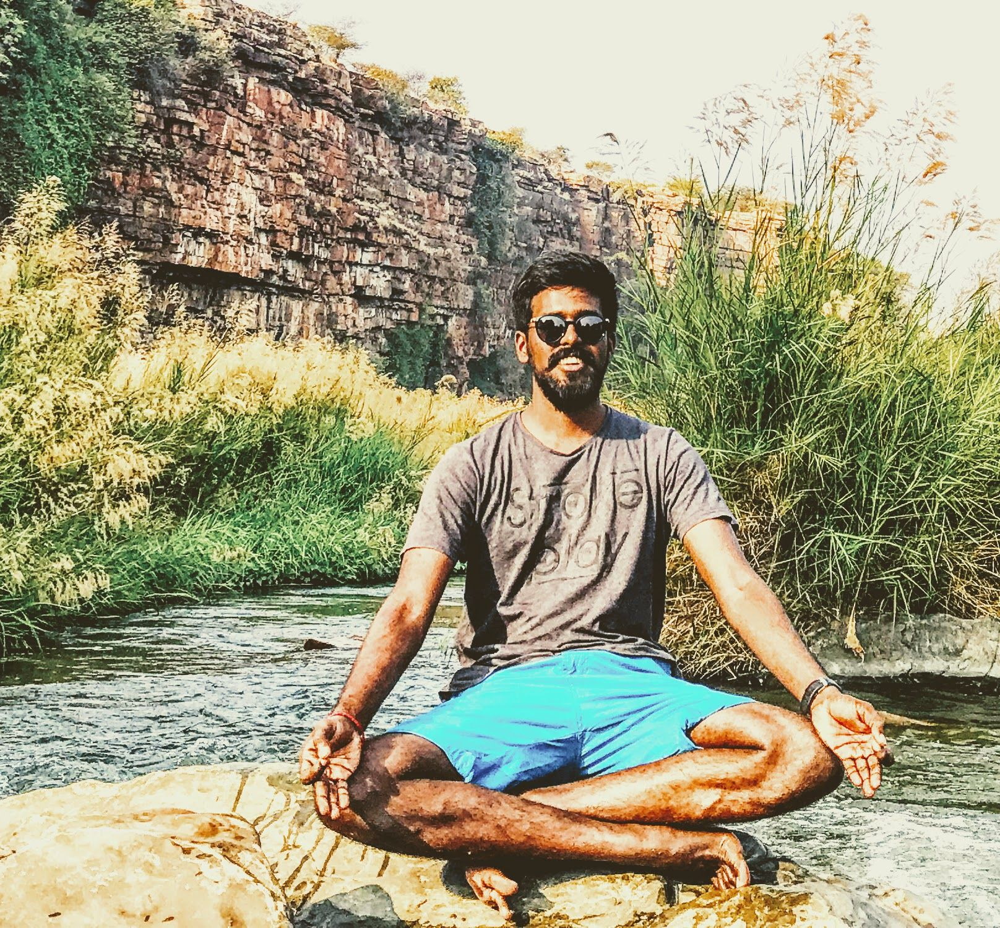

Machine learning & deep learning
Computer vision, sequence models, transformers, document intelligence, inference and fine-tuning.
I build AI products and the teams behind them.
My work spans machine learning, deep learning
and agents that operate in the real world.
Currently building at LaunchAI ↗

I’m Gokul. I’ve co-founded a company, led engineering teams and built products that connect software with the physical world.
At Flytta, I built mobile products and on-device machine learning. Since then, I’ve worked across computer vision, language systems and large-scale data platforms, before moving into multi-agent systems and enterprise automation.
Today, I own product direction at LaunchAI, working on vision-first agents, the architectures that keep them reliable, and the evaluations that tell us how they behave.
Computer vision, sequence models, transformers, document intelligence, inference and fine-tuning.
Multi-agent orchestration, harnesses, context engineering, RAG, MCP, guardrails and evaluations.
Product direction, system architecture, engineering teams and taking products from 0→1.
A conversation about my work, my journey
and the things I like to build.
Models download on request; caching depends on your browser.
Checking conversation availability…
AI answers from my public profile and may make mistakes. On-device mode processes questions and voice locally; model files download from Hugging Face and a CDN. Reach the real me ↗
A selection of my product and engineering work.
Open a project for my role, technical approach and outcomes.
I own product direction and architect agent tooling for vision-first automation, including accounts payable and ERP-connected finance workflows.
I led engineering and architected a desktop platform with five specialized agents for research, enrichment and outreach, with context continuity across workflows.
I co-founded Flytta and built its technology, including on-device object detection for mobile estimates and LSTM anomaly detection on cargo sensor streams.
From edge inference to deep learning
and production agent systems.
Own product direction for vision-first desktop automation and ERP-connected finance workflows. Architect deterministic agent tooling, dynamic context switching, guardrails, MCP servers and tool calling. Define SLM and SVLM evaluation, fine-tuning, tracing and observability strategy.
Explore LaunchAI ↗Led 13 engineers delivering AI products from 0→1. Architected a desktop sales platform with five specialized agents and self-serve workflows with context continuity. The platform drove the company’s acquisition; workflows improved sales by 25% for non-standard lead generation.
Led technical direction for physics-informed LEO orbit prediction and synthetic data pipelines. Worked on RAG, transformer-based entity matching, aspect-based sentiment, document AI spanning OCR and NER, terabyte-scale connectors and satellite imagery annotation.
Built multi-format compliance pipelines with Airflow. Evaluated LEGAL-BERT for contract review; developed Neo4j knowledge graphs with entity linking and audio-visual deep learning for real-time speech synthesis and one-shot facial re-enactment.
Shipped YOLOv2 object detection with transfer learning and on-device inference for mobile cost estimates. Built LSTM anomaly detection on Raspberry Pi sensor streams for cargo damage prevention. Scaled the company to 22 people and raised $1.5M Series A.
An MCP security layer that blocks malicious or vulnerable package installs requested by AI agents.
A curated directory of open-weight small models, organized by use case and benchmarks.
An open-source framework for replacing existing backend architecture.
My talk slides and resources on the possibilities of small language models.
I’ve spent time organizing Python and AI communities, including PyCon India, Hyderabad Python User Group and AI Saturdays.
Field hockey was also a big part of my life, including state and national competitions. I studied Computer Science at Hindustan University.
Earlier projects, publications & community work ↗